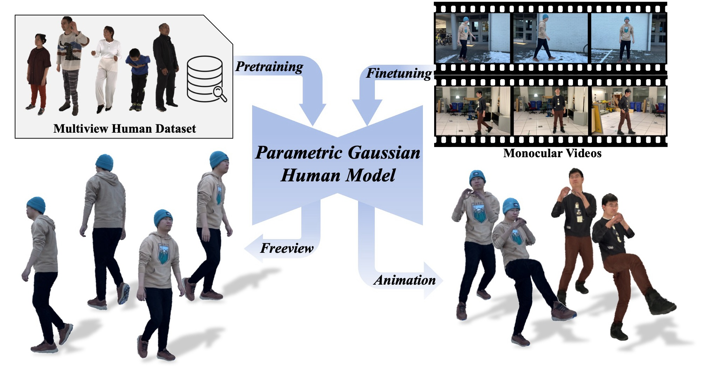
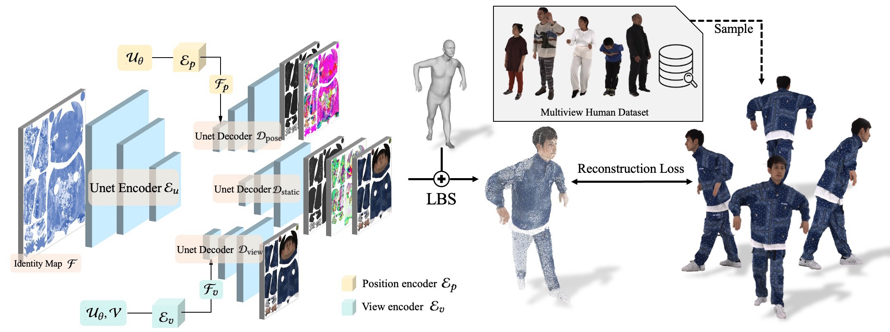

1Tsinghua University 2ByteDance
Photorealistic and animatable human avatars are a key enabler for virtual/augmented reality, telepresence, and digital entertainment. While recent advances in 3D Gaussian Splatting (3DGS) have greatly improved rendering quality and efficiency, existing methods still face fundamental challenges, including time-consuming per-subject optimization and poor generalization under sparse monocular inputs. In this work, we present the Parametric Gaussian Human Model (PGHM), a generalizable and efficient framework that integrates human priors into 3DGS for fast and high-fidelity avatar reconstruction from monocular videos. PGHM introduces two core components: (1) a UV-aligned latent identity map that compactly encodes subject-specific geometry and appearance into a learnable feature tensor; and (2) a Disentangled Multi-Head U-Net that predicts Gaussian attributes by decomposing static, pose-dependent, and view-dependent components via conditioned decoders. This design enables robust rendering quality under challenging poses and viewpoints, while allowing efficient subject adaptation without requiring multi-view capture or long optimization time. Experiments show that PGHM is significantly more efficient than optimization-from-scratch methods, requiring only approximately 20 minutes per subject to produce avatars with comparable visual quality, thereby demonstrating its practical applicability for real-world monocular avatar creation.

We introduce the Parametric Gaussian Human Model (PGHM), a generalizable prior for efficient and realistic human avatar modeling. After being trained on a large-scale, high-quality multiview human dataset, PGHM can be efficiently fine-tuned using monocular single-person videos. This enables accurate avatar reconstruction and supports both free-viewpoint rendering and animation.

The overall pipeline of the parametric model training involves pre-training our model on a large-scale human dataset to obtain a robust human prior. This process consists of two key components: 1) a UV-aligned identity map to extract the appearance feature information of individuals, and 2) a Disentangled Multi-Head U-Net to decouple pose-dependent and view-dependent Gaussian attributes.
@inproceedings{xxxx,
title={Parametric Gaussian Human Model},
author={xxx},
booktitle={xxx},
year={2025}
}